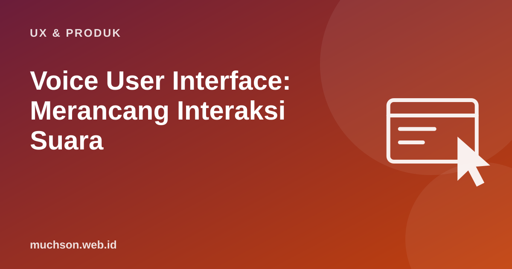

Beranda › Artikel › UX & Produk
UX & ProdukVoice User Interface: Merancang Interaksi Suara
Di layar, pengguna bisa melihat semua pilihan sekaligus. Dalam percakapan suara, semuanya berurutan dan hilang begitu diucapkan. Merancang antarmuka suara bukan sekadar mengubah teks menjadi suara, melainkan merancang percakapan yang terasa wajar, singkat, dan memaafkan kesalahan.

Apa yang berbeda dari antarmuka layar
Prinsip menulis dialog
Menangani kesalahan
Pengenalan ucapan bisa salah, terutama dengan aksen, kebisingan, campuran bahasa, dan nama lokal. Rancang jalur pemulihan sejak awal.
| Situasi | Respons yang buruk | Respons yang lebih baik |
|---|---|---|
| Tidak terdengar | "Maaf, saya tidak mengerti." (diulang terus) | Pertama: "Maaf, bisa diulang?" Kedua: beri contoh, "Misalnya, ucapkan cek pesanan." |
| Tidak yakin | Langsung menjalankan | "Maksud Anda Madiun, Jawa Timur?" |
| Gagal berkali-kali | Mengulang tanpa akhir | Tawarkan jalur lain: kirim tautan, atau sambungkan ke manusia |
Konfirmasi: kapan perlu
- Konfirmasi eksplisit untuk tindakan berisiko atau mahal: "Transfer 500 ribu ke Budi. Benar?"
- Konfirmasi implisit untuk tindakan ringan: "Oke, alarm jam 6 pagi." Pengguna bisa mengoreksi bila salah.
- Jangan mengonfirmasi segala hal; itu membuat percakapan lambat dan melelahkan.
Kepribadian dan konsistensi
Asisten suara selalu punya kesan kepribadian, disengaja atau tidak. Tentukan nada (ramah, ringkas, sopan) dan pertahankan di semua dialog. Untuk konteks Indonesia, perhatikan sapaan (Kak, Bapak/Ibu, Anda) yang sesuai pengguna.
Menguji tanpa membangun dulu
Metode "Wizard of Oz": satu orang berperan sebagai sistem dan membacakan dialog dari naskah, sementara peserta berbicara seolah dengan mesin. Cara murah ini cepat menunjukkan bagian dialog yang membingungkan sebelum ada kode.
Tanya jawab
Apakah AI generatif mengubah desain suara?
Bagaimana dengan campuran bahasa Indonesia dan Inggris?
Apakah antarmuka suara inklusif?
Sumber dan bacaan lanjut
- Amazon Alexa: Design an Engaging Voice User Interface
- Amazon Alexa Design Guide (blog pengumuman)
- Chatbot AI layanan pelanggan (artikel terkait)